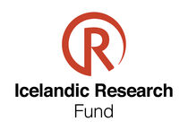

Computational effects and high-level control (CTRL-F)
This is a research project funded by
the Icelandic Research Fund, run at the Department of Computer Science of
Reykjavik University from 1 Jan. 2022
to 31 Dec. 2024 (extended until Dec. 2025).
Research programme
We study the following topics:
- computational effects and iteration (infinite computations),
- computational effects and concurrency,
- computational effects and event-drivenness.
People
Participants
- Tarmo Uustalu, PI
- Sergey Goncharov (initially Friedrich-Alexander-U. Erlangen-Nürnberg, then U. of Birmingham), co-PI
- Renato Neves (U. do Minho), co-PI
- Exequiel Rivas (initially UN Rosario, then Tallinn UT), co-PI
- Dylan McDermott, postdoc (moved on to U. of Oxford)
- Yasuaki Morita, PhD student
- Calvin Lee, MSc/PhD student
- Basile Gros (ENSEEIHT), intern (guest MSc student)
Collaborators
Project activity
Research and conference visits
- Yasuaki Morita, RU → Berlin (ECOOP '22), 5-10 June 2022
- Dylan McDermott, RU → Canterbury (Mtg. on Graded Types) and Nantes (TYPES '22), 16-23 June 2022
- Exequiel Rivas, Milan → Tallinn UT, 11-18 July 2022
- Dylan McDermott, RU → Glasgow (ACT '22),
17-22 July 2022
- Dylan McDermott, RU → Haifa (FLoC '22), 1-7 Aug 2022
- José Espírito Santo and Luís Pinto, U. do Minho, Braga →
RU, 26 Aug.-4 Sept. 2022 (funded by ICE-TCS)
- Dylan McDermott, RU → Ljubljana (ICFP '22), 9-15 Sept. 2022
- Dylan McDermott, RU → Tbilisi (CLAS '22), 23-30 Sept. 2022
- Yasuaki Morita, RU → Tbilisi (CLAS '22), 23-30 Sept. 2022
- Tarmo Uustalu, RU → Tbilisi (CLAS '22), 23-30 Sept. 2022 (funded by T.U.'s RU research grant)
- Tarmo Uustalu, RU → U. of Nottingham (Altenkirch Symp.), 11-13 Oct. 2022 (funded by T.U.'s RU research grant)
- Nathanael Arkor, Masaryk U., Brno → RU, 4-25 Nov. 2022 (funded by ICE-TCS)
- Sergey Goncharov, FAU Erlangen-Nürnberg → RU, 8-15 Jan. 2023
- Maciej Piróg, Standard Chartered → Palaiseau (CLA-16), 11-14 Jan. 2023
- Denis Firsov, Guardtime → RU, 1-10 March 2023 (funded by T.U.'s RU research grant)
- Ülo Reimaa, U. of Tartu → RU, 15 March-2 Apr. 2023
- Tarmo Uustalu, RU → FAU Erlangen-Nürnberg, 17-21 Apr. 2023
- Patrik Eklund, U. of Umeå → RU, 14-17 May 2023 (paid by U. of Umeå)
- Dylan McDermott, RU → U. of Tartu and Tallinn UT, 17-29 May 2023
- Shin-ya Katsumata, NII, Tokyo → RU, 31 May-10 June 2023
- Maciej Piróg, Standard Chartered → RU, 13-17 June 2023
- Tarmo Uustalu, Tallinn UT → Kraków (CLoCk-68), 27-30 June 2023 (paid by U. Jagielloński)
- Yasuaki Morita, RU → Tallinn UT, 1-12 July 2023
- Tarmo Uustalu, RU → Oxford (IFIP WG 2.1 #80), 16-21 July 2023 (funded by T.U.'s RU research grant)
- Flavien Breuvart, LIPN/U. Sorbonne Paris Nord → RU, 23 Aug.-4 Oct. 2023
- Peter Dybjer, Chalmers UT → RU, 27 Aug.-2 Sept. 2023 (funded by ICE-TCS)
- Dylan McDermott, RU → Shonan Village (Shonan Mtg. on Effects) and NII, Tokyo, 22 Sept.-4 Oct. 2023
- Tarmo Uustalu, Tallinn UT → Cascais (PPDP '23) and U. do Minho, Braga, 20-28 Oct. 2023 (paid by Tallinn UT)
- Dylan McDermott, RU → U. do Minho, Braga, 23 Oct.-1 Nov. 2023 (partially paid by U. do Minho)
- Dylan McDermott, RU → Tallinn UT, 5-19 Nov. 2023
- Yasuaki Morita, RU → Västerås (NWPT '23), 21-24 Nov. 2023 (funded by Y.M.'s RU RF PhD grant)
- Tarmo Uustalu, RU → U. of Nottingham and U. of Cambridge (Mycroft Symp.), 28 Nov.-2 Dec. 2023 (partially funded by T.U.'s RU research grant)
- Dylan McDermott, RU → U. of Cambridge (Mycroft Symp.), 30 Nov.-2 Dec. 2023
- Georg Struth, U. of Sheffield → RU, 17-24 March 2024 (funded by ICE-TCS)
- Tarmo Uustalu, Tallinn UT → Neustadt (IFIP WG 2.1 #81) and Luxembourg (ETAPS '24), 31 March-7 Apr. 2024 (paid by Tallinn UT)
- Tarmo Uustalu, RU → Milano (PPDP '24), Genova (Rosolini
Fest), 8-14 Sept. 2024 (funded by T.U.'s RU research grant)
- Quan Long, Paris → RU, 7-13 Dec. 2024
- Luís Pinto, U. of Minho → RU, 22 Apr.-1 May 2025 (funded by IceProof)
- Tarmo Uustalu, Tallinn UT → Macquarie U., 1-17 Nov. 2025 (paid by Macquarie U. and Tallinn UT)
- Exequiel Rivas, London → RU, 30 Nov.-7 Dec. 2025
Project meetings
- Project local meeting at Hveragerði, with Flavien Breuvart
(LIPN/U. Sorbonne Paris Nord) and Peter Dybjer (Chalmers UT) as
guests, 29-31 Aug. 2023
Talks of visitors at RU
- J. Espírito Santo, Russell-Prawitz translation and atomic
polymorphism (joint work with G. Ferreira), talk at ICE-TCS seminar, 1
Sept. 2022
- L. Pinto, Coinductive proof search for intuitionistic
propositional logic (joint work with J. Espírito Santo, R. Matthes),
talk at ICE-TCS seminar, 1 Sept. 2022
- N. Arkor, A 2-dimensional perspective on polymorphism, talk at
ICE-TCS seminar, 7 Nov. 2022
- S. Goncharov, Towards a higher-order mathematical operational
semantics (joint work with S. Milius, L. Schröder, S. Tsampas,
H. Urbat), talk at ICE-TCS seminar, 12 Jan. 2023
- D. Firsov, EasyCrypt for working cryptographers, talk at ICE-TCS
seminar, 9 March 2023
- Ü. Reimaa, Introduction to cocategories, talk at ICE-TCS
seminar, 27 March 2023
- P. Eklund, AI with symbols and not just numbers, talk at ICE-TCS
seminar, 15 May 2023
- S. Katsumata, Codensity games for bisimilarity (joint work with
Y. Komorida, N. Hu, B. Klin, S. Humeau, C. Eberhart, I. Hasuo), talk at
ICE-TCS seminar, 6 June 2023
- M. Piróg, High-level effect handlers in C++ (joint work with
D. Ghica, S. Lindley, M. Maroñas Bravo), talk at ICE-TCS seminar, 15
June 2023
- P. Dybjer, Dependent type theory and proof assistants: an
introduction, talk at ICE-TCS seminar, 1 Sept. 2023
- F. Breuvart, Is Curry-Howard a C-H-Lambek or C-H-Girard
correspondence?, talk at ICE-TCS seminar, 8 Sept. 2023
- G. Struth, Dedekind quantaloids and their intuitionistic modal
algebras (joint work with P. Malbos, D. Pous), talk at ICE-TCS
seminar, 21 March 2024
- Q. Long, Centre of strong graded monads (joint work with
F. Breuvart, V. Zamdzhiev), talk at ICE-TCS seminar, 9 Dec. 2024
- L. Pinto, Modal embeddings and calling paradigms (joint work with
J. Espírito Santo, T. Uustalu), talk at ICE-TCS seminar, RU, 30 April
2025
- E. Rivas, Formalizing a classification theorem for low-dimensional
solvable Lie algebras in Lean (joint work with V. del Barco,
G. Infanti, P. Schwahn), talk at ICE-TCS seminar, RU, 5 Dec. 2025
Results and dissemination
Articles
- D. McDermott, T. Uustalu. Flexibly graded monads and
graded algebras. In E. Komendantskaya, ed., Proc. of 14th
Int. Conf. on Mathematics of Program Construction, MPC 2022 (Tbilisi,
Sept. 2022), v. 13544 of Lect. Notes in Comput. Sci.,
pp. 102-128. Springer,
2022. doi:10.1007/978-3-031-16912-0_4
[postprint in Opin vísindi]
- S. Katsumata, D. McDermott, T. Uustalu,
N. Wu. Flexible presentations of graded monads. Proc. of ACM on
Program. Lang., v. 6, n. ICFP (Proc. of 27th ACM SIGPLAN
Int. Conf. on Functional Programming, ICFP '22, Ljubljana,
Sept. 2022), art. 123, 29 pp., 2022.
doi:10.1145/3547654
- F. Breuvart, D. McDermott, T. Uustalu. Canonical
gradings of monads. In J. Master, M. Lewis, eds., Proc. of 5th
Int. Conf. on Applied Category Theory, ACT 2022 (Glasgow, July
2022), v. 380 of Electron. Proc. in Theor Comput. Sci.,
pp. 1-21. Open Publishing Assoc.,
2023. doi:10.4204/eptcs.380.1
- E. Rivas. Procontainers for idioms, arrows and
monads. In K.-B. Hou (Favonia), J. Gibbons, R. Atkey, M. Kerjean,
eds., Proc. of 10th and 11th Wkshs. on Mathematically Structured
Functional Programming, MSFP 2024 and MSFP 2026 (Tallinn, July 2024
and Lisbon, July 2026), Electron Proc. in
Theor. Comput. Sci., Open Publ. Assoc., to appear.
- S. Capobianco, T. Uustalu. Additive cellular automata
graded-monadically. In Proc. of 25th Int. Symp. on Principles and
Practice of Declarative Programming, PPDP '23 (Cascais,
Oct. 2023), ACM Int. Conf. Proc. Series, art. 13, 9 pp. ACM
Press,
2023. doi:10.1145/3610612.3610625
[postprint in Opin vísindi]
- D. McDermott, A. Mycroft. Galois connecting call-by-value
and call-by-name. Log. Methods Comput. Sci., v. 20, n. 1,
art. 13, 43 pp., 2024.
doi:10.46298/lmcs-20(1:13)2024
- N. Arkor, D. McDermott. The formal theory of relative
monads. J. Pure Appl. Algebra, v. 228, n. 9, art. 107676, 107
pp.,
2024. doi:10.1016/j.jpaa.2024.107676
- N. Arkor, D. McDermott. Relative
monadicity. J. Algebra, v. 663, pp. 399-434,
2025. doi:10.1016/j.jalgebra.2024.08.040
- S. Goncharov, T. Uustalu. A unifying categorical
view of nondeterministic iteration and tests. In R. Majumdar,
A. Silva, eds., Proc. of 35th Int. Conf. on Concurrency Theory,
CONCUR 2024 (Calgary, Sept. 2024), v. 311 of Leibniz
Int. Proc. in Inform., art. 25, 22 pp. Dagstuhl Publishing,
2024. doi:10.4230/lipics.concur.2024.25
- E. Rivas, T. Uustalu. Concurrent monads for shared
state. In Proc. of 26th
Int. Symp. on Principles and Practice of Declarative Programming,
PPDP '24 (Milan, Sept. 2024), ACM
Int. Conf. Proc. Series, art. 19, 13 pp. ACM Press,
2024. doi:10.1145/3678232.3678249
- N. Arkor, D. McDermott. The nerve theorem for relative
monads. Theor. Appl. Categ., v. 43, n. 13, pp. 403-454,
2025.
doi:10.70930/tac/jjc9mnky
- V. del Barco, G. Infanti, E. Rivas, P. Schwahn. Formalizing a
classification theorem for low-dimensional solvable Lie algebras in
Lean. In V. de Paiva, P. Koepke, eds., Proc. of 18th Int. Conf. on
Intelligent Computer Mathematics, CICM 2025 (Brasília, Oct. 2025),
v. 16136 of Lect. Notes in Comput. Sci., pp. 317-330. Springer, 2025.
doi:10.1007/978-3-032-07021-0_18
- M. Smykalla, T. Uustalu, N. Veltri, C.-S. Wan. Equality of
proofs in substructural intuitionistic modal
logics. Latest version, 13 pp.,
7 March 2026.
- N. Arkor, D. McDermott. Presheaves and cocompletions in
formal category theory. Latest version, 66 pp.,
Apr. 2026. arXiv:2604.22370
[math.CT]
Abstracts
- D. McDermott, M. Piróg, T. Uustalu. Counting monads
on lists. 5 pp., 2023. Distributed at 16th Wksh. on Computational
Logic and Applications, CLA-16 (Palaiseau,
Jan. 2023). abstract
at workshop website
- J. Espírito Santo, D. McDermott,
L. Pinto, T. Uustalu. Consequences of the modal unification
of the functional calling paradigms. In Abstracts from 29th
Int. Conf. on Types for Proofs and Programs, TYPES '23 (València,
June 2023), pp. 33-35. U. Politècnica de València,
2023. abstract
book
- D. McDermott, Y. Morita, T. Uustalu. Bidirectional
data-flow analyses compared to relational through Galois
connections. In Abstracts from 34th Nordic Wksh. on Programming
Theory, NWPT '23 (Västerås, Nov. 2023), pp. 1-4. Mälardalen U.,
2023. abstract
book
- C. S. Lee. Univalent multicategories. 4 pp.,
2026. Distributed at 11th Wksh. on Homotopy Type Theory/Univalent
Foundations, HoTT/UF 2026 (Aarhus, June
2026). abstract
at workshop website
- B. Gunnarsson, E. Rivas, T. Uustalu. Concurrent
monads as monads in a 2-category. 3 pp. Distributed at 11th Wksh. on
Mathematically Structured Functional Programming, MSFP 2026 (Lisbon,
July
2026). abstract
at workshop website
- M. Smykalla, T. Uustalu, N. Veltri,
C.-S. Wan. Multicategories and representability for substructural
intuitionistic modal logics. 3 pp. Distributed at 10th Int. Wksh. on
Trends in Linear Logic and Its Applications, TLLA 2026 (Lisbon, July
2026). abstract
at workshop website
Theses
- C. S. Lee. Interactions of (co)monads in Agda, MSc thesis,
Reykjavik University, 2024.
thesis in Skemman
- B. Gunnarsson. Concurrent monads in 2-categories. MSc thesis,
University of Iceland, 2026.
thesis in Skemman
Talks
- E. Rivas, Procontainers: a proposal from computational effects,
talk at 2nd Wksh. on Polynomial Functors, online, 14-18 March 2022
[video]
- Y. Morita, A type system with subtyping for WebAssembly's stack
polymorphism (joint work with D. McDermott, T. Uustalu), talk at PAW
2022, Berlin, 6 June 2022
- D. McDermott, Canonical gradings of monads (joint work with
F. Breuvart, T. Uustalu), talk at Meeting on Graded Types, U. of
Kent, Canterbury, 17 June 2022
[video]
- D. McDermott, Flexible presentations of graded monads (joint work
with S. Katsumata, T. Uustalu, N. Wu), talk at TYPES 2022, Nantes,
20-23 June 2022
[video]
- D. McDermott, Canonical gradings of monads (joint work with
F. Breuvart, T. Uustalu), talk at ACT 2022, Glasgow, 18-22 July
2022
[video]
- D. McDermott, Galois connecting call-by-value and call-by-name
(joint work with A. Mycroft), talk at FSCD 2022, Haifa, 2-5
Aug. 2022
- D. McDermott, Flexibly graded monads and graded algebras (joint
work with T. Uustalu), talk at HOPE 2022, Ljubljana, 11
Sept. 2022
[video]
- D. McDermott, Flexible presentations of graded monads (joint work
with S. Katsumata, T. Uustalu, N. Wu), talk at ICFP 2022,
Ljubljana, 12-14 Sept. 2022
[video]
- D. McDermott, Flexibly graded monads and graded algebras (joint
work with T. Uustalu), talk at MPC 2022, Tbilisi, 26-28
Sept. 2022
[video]
- Y. Morita, A type system with subtyping for WebAssembly's stack
polymorphism (joint work with D. McDermott, T. Uustalu), talk at ICTAC
2022, Tbilisi, 27-30 Sept. 2022
- T. Uustalu, Skewness everywhere, talk at Types, Thorsten and
Theories: Thorsten Altenkirch's 60th birthday celebration,
Nottingham, 12 Oct. 2022
[video]
- T. Uustalu, Additive cellular automata graded-monadically (joint
work with S. Capobianco), talk at IFIP WG 2.1 short online meeting, 24
Oct. 2022
- N. Arkor, Relative monads and their many guises (joint work with
D. McDermott), talk at Category Theory Octoberfest 2022, online, 29-30
Oct. 2022
[video]
- T. Uustalu, Additive cellular automata graded-monadically (joint
work with S. Capobianco), talk at Comonad meetup, online, 16
Oct. 2022
- M. Piróg, Counting monads on lists (joint work with D. McDermott,
T. Uustalu), talk at 16th Wksh. on Computational Logic and
Applications, Palaiseau, 12-13 Jan. 2023
[video]
- E. Rivas, Procontainers and computational effects, talk at
2o Encontro Brasileiro em Teoria das Categorias, São Paulo,
SP, 20-24 March 2023
[video]
- N. Arkor, The formal theory of relative monads (joint work with
D. McDermott), talk at PSSL-107, Athens, 1-2 Apr. 2023
- T. Uustalu, Additive cellular automata graded-monadically (joint
work with S. Capobianco), talk at Oberseminar Theoretische Informatik,
FAU Erlangen-Nürnberg, 18 April 2023
- N. Arkor, The theory of relative (co)monads (joint work with
D. McDermott), talk at Comonad meetup, online, 14 June 2023
- J. Espírito Santo, Consequences of the modal unification of the
functional calling paradigms (joint work with D. McDermott, L. Pinto,
T. Uustalu), talk at TYPES 2023, València, 12-15 June 2023
- T. Uustalu, The proof theory of skew logics (based on joint work
with N. Veltri, C.-S. Wan, N. Zeilberger), invited talk at CLoCk-68,
Kraków, 28-30 June 2023
- N. Arkor, The formal theory of relative monads (joint work with
D. McDermott), talk at CT 2023, Louvain-la-Neuve, 2-8 July
2023 [video]
- T. Uustalu, Sweedler theory of monads (joint work with
D. McDermott, E. Rivas), talk at IFIP WG 2.1 #80, Oxford, 17-21 July
2023
- N. Arkor, Relative monads and distributors (joint work with
D. McDermott), talk at LoVe seminar, LIPN/U. Sorbonne Paris Nord, 21
Sept. 2023
- T. Uustalu, Additive cellular automata graded-monadically (joint
work with S. Capobianco), talk at PPDP 2023, Cascais, 22-23 Oct. 2023
[video]
- D. McDermott, Flexible presentations of graded monads (joint work
with S. Katsumata, T. Uustalu, N. Wu), talk at Seminar of Algebra,
Logic and Computation Group, Centro de Matemática, U. do Minho,
Braga, 31 Oct. 2023
- Y. Morita, Bidirectional data-flow analyses compared to relational
through Galois connections (joint work with D. McDermott, T. Uustalu),
talk at NWPT 2023, Västerås, 22-23 Nov. 2023
- T. Uustalu, Additive cellular automata graded-monadically (joint
work with S. Capobianco), talk at FP lab seminar, U. of Nottingham,
30 Nov. 2023
- T. Uustalu, Comonadic notions of computations revisited, talk at
symposium for Alan Mycroft, U. of Cambridge, 1 Dec. 2023
- D. McDermott, How to construct graded monads, talk at symposium
for Alan Mycroft, U. of Cambridge, 1 Dec. 2023
- N. Arkor, The pullback theorem for relative monads (joint work
with D. McDermott), talk at CS Theory Seminar, Tallinn UT, 28 March
2024 [video]
- T. Uustalu, Concurrent monads for shared state (joint work with
E. Rivas), talk at IFIP WG 2.1 #81, Neustadt, 31 March-5 Apr.
2024
- N. Arkor, The pullback theorem for relative monads (joint work
with D. McDermott), talk at CT '24, Santiago de Compostela, 23-29
June 2024
- T. Uustalu, Sweedler theory of monads (joint work with
D. McDermott, E. Rivas), invited talk at Structure Meets Power 2024,
Tallinn, 7 July 2024
- E. Rivas, Procontainers for idioms, arrows and monads, talk at
MSFP '24, Tallinn, 8 July 2024
[video]
- T. Uustalu, Concurrent monads for shared state (joint work with
E. Rivas), talk at MSFP '24, Tallinn, 8 July 2024
[video]
- S. Goncharov, Pushing the limits of Kleene algebra (in part joint
work with T. Uustalu), invited talk at RAMICS-AIML 2024, Prague, 19-22
Aug. 2024
- T. Uustalu, Concurrent monads for shared state (joint work with
E. Rivas), talk at PPDP '24, Milan, 10-11 Sept. 2024
- S. Goncharov, A unifying categorical view of nondeterministic
iteration and tests (joint work with T. Uustalu), talk at CONCUR
'24, Calgary, AB, 10-13 Sept. 2024
- D. McDermott, The formal theories of presheaves and cocompletions
(joint work with N. Arkor), talk at 2nd Virtual Wksh. on Double Categories,
online, 21-30 Oct. 2024
[video]
- S. Goncharov, Kleene iteration: from Kleene algebra onwards (in
part joint work with T. Uustalu), MGS Christmas Seminar, U. of
Sheffield, 17 Dec. 2024
- N. Arkor, Relative monadicity (joint work with D. McDermott), talk
at PSSL-110, Tallinn, 4-5 May 2025
- D. McDermott, Notions of presentation for graded monads (joint
work with S. Katsumata, T. Uustalu, N. Wu), talk at U. of Birmingham
theoretical computer science seminar, 30 May 2025
- T. Uustalu, Sweedler theory of monads (joint work with
D. McDermott, E. Rivas), talk at Australian Category Seminar,
Macquarie U., Sydney, 12 November 2025
- T. Uustalu, Substructural intuitionistic modal logics (joint work
with M. Smykalla, N. Veltri, C.-S. Wan), talk at IFIP WG 2.1 Meeting
#84, Vihula, 27 April-1 May 2026
- C. S. Lee, Univalent multicategories, talk at HoTT/UF 2026, Aarhus,
1-2 June 2026
- T. Uustalu, Effects in parallel with concurrent monads (based on
joint work with B. Gunnarsson, E. Rivas), invited talk at ACT '26,
Tallinn, 6-10 July 2026
- T. Uustalu, Concurrent monads as monads in a 2-category (joint
work with B. Gunnarssson, E. Rivas), talk at MSFP '26, Lisbon, 18 July
2026
- T. Uustalu, Multicategories and representability for substructural
intuitionistic modal logics (joint work with M. Smykalla, N. Veltri,
C.-S. Wan), talk at TLLA '26, Lisbon, 18-19 July 2026
- T. Uustalu, Effects in parallel with concurrent monads, talk at
Lambda World '26, Torremolinos, 29-30 October 2026

Tarmo Uustalu
Last update 20 July 2026